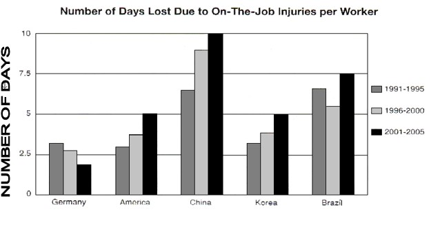

<!-- 원본: ACADEMIC4/writing (레거시 서버에서 2026-11-14 수집, 정답 제거) -->
<div class="legacy-content"><div id="pageContainer">
<div class="page" id="page-0">
<div class="flex flex-col md:flex-row gap-6">
<div class="w-full md:w-1/2">
<h3 class="text-2xl font-bold text-purple-800 mb-4">WRITING TASK 1</h3>
<br/>
<p><i>You should spend about 20 minutes on this task.</i></p>
<br/>
<p style="width:600px"><b>
                                        This bar graph shows the number of days lost due to injury per worker for five
                                        countries.<br/>There are three time periods shown beginning with the year 1991
                                        and
                                        ending in 2005.<br/>
</b></p>
<br/>
<p style="width:600px">
                                    Write a report for a university lecturer describing the information.<br/>
</p>
<br/>
<div style="width:800px; text-align: center; text-indent: 100px;">

</div>
<p style="width:600px">
                                    You should write at least 150 words.
                                </p>
</div>
<div class="w-full md:w-1/2">
<textarea class="notebook-textarea w-full wc" name="task1" placeholder="Write your answer here..." rows="15"></textarea>
<p class="text-purple-700 mt-2">Word Count: <span class="wc-out">0</span></p>
</div>
</div>
</div>
<div class="page" id="page-1">
<div class="flex flex-col md:flex-row gap-6">
<div class="w-full md:w-1/2">
<h3 class="text-2xl font-bold text-purple-800 mb-4">WRITING TASK 2</h3>
<br/>
<p><i>You should spend no more than 40 minutes on this task.</i></p>
<br/>
<div style="width:600px; border:1px solid #000; padding:10px;">
<b>
                                        In the past, it was unusual for most people to change careers more than once or
                                        twice.<br/>Now it is quite common for people to have had ten or more different
                                        jobs
                                        in
                                        their lifetimes.
                                    </b>
</div>
<br/>
<br/>
<p>What are the advantages and disadvantages of such a change?</p>
<br/>
<p>Use examples from your own experience to support your answer.<br/>
                                    You should write at least 250 words.
                                </p>
</div>
<div class="w-full md:w-1/2">
<textarea class="notebook-textarea w-full wc" name="task2" placeholder="Write your answer here..." rows="15"></textarea>
<p class="text-purple-700 mt-2">Word Count: <span class="wc-out">0</span></p>
</div>
</div>
</div>
<div class="flex justify-center gap-4 mt-6">
</div></div></div>
